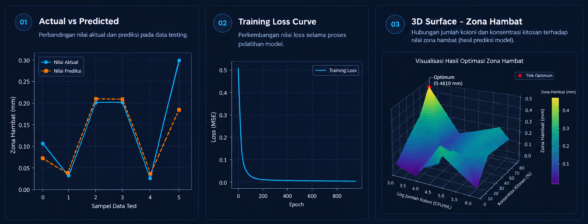

FEATURED MACHINE LEARNING PROJECT
Proyek penelitian yang menerapkan Artificial Neural Network (ANN) untuk mempelajari pola hubungan antara jumlah koloni Staphylococcus aureus, konsentrasi kitosan, dan zona hambat.
PROJECT OVERVIEW
Proyek ini merupakan penelitian yang menerapkan Artificial Neural Network (ANN) untuk mempelajari hubungan antara jumlah koloni Staphylococcus aureus, konsentrasi kitosan, dan zona hambat berdasarkan dataset penelitian yang tersedia.
Kitosan yang digunakan dalam konteks penelitian berasal dari pemanfaatan limbah cangkang mutiara Pinctada maxima. Data penelitian digunakan sebagai dasar untuk membangun model komputasional yang dapat mempelajari pola hubungan antarvariabel.
Pendekatan Artificial Neural Network digunakan untuk mempelajari hubungan yang kompleks dan nonlinier dari data. Model yang dibangun digunakan sebagai pendekatan komputasional untuk melakukan prediksi berdasarkan pola yang dipelajari dari dataset.
Tujuan utama proyek ini adalah membangun model Artificial Neural Network untuk memprediksi nilai zona hambat berdasarkan jumlah koloni dan konsentrasi kitosan.
Selain melakukan prediksi, model digunakan untuk mengeksplorasi kombinasi variabel input dan membantu mengidentifikasi kombinasi yang menghasilkan prediksi terbaik dalam batas ruang data yang diamati.
Hasil dari pendekatan komputasional ini diharapkan dapat membantu proses eksplorasi awal dan mengurangi kebutuhan percobaan berulang sebelum dilakukan verifikasi eksperimental lebih lanjut.
DATASET
Jumlah koloni S. aureus digunakan sebagai salah satu variabel input dalam pemodelan.
Konsentrasi kitosan digunakan sebagai variabel input untuk mempelajari hubungan perubahan konsentrasi terhadap zona hambat.
Zona hambat digunakan sebagai variabel target atau output yang diprediksi oleh model Artificial Neural Network.
METHODOLOGY
Dataset disusun berdasarkan tiga variabel utama, yaitu jumlah koloni, konsentrasi kitosan, dan zona hambat.
Transformasi logaritmik diterapkan pada variabel jumlah koloni untuk merepresentasikan skala data dengan lebih proporsional sebelum proses pemodelan.
Dataset dibagi menjadi data training, validation, dan testing dengan rasio 80%, 10%, dan 10%.
Variabel input distandariasi menggunakan StandardScaler dengan parameter yang ditentukan dari data training.
Model Artificial Neural Network dilatih untuk mempelajari pola hubungan antara variabel input dan zona hambat.
MODEL ARCHITECTURE
Arsitektur model dirancang untuk mempelajari hubungan antara dua variabel input dengan nilai zona hambat sebagai output.
8 Neurons · ReLU Activation
Predicted Output
MODEL CONFIGURATION
MODEL PERFORMANCE
Performa model dievaluasi menggunakan Mean Squared Error (MSE) dan coefficient of determination (R²) pada data training, validation, dan testing.
Evaluation on unseen test data
Hasil evaluasi menunjukkan bahwa model mampu mempelajari pola hubungan antara variabel input dan zona hambat dari dataset yang digunakan. Evaluasi pada data testing menghasilkan nilai MSE sebesar 0.0026 dan R² sebesar 0.7884.
Perbedaan performa antar pembagian data perlu dipahami dalam konteks ukuran dataset yang terbatas. Oleh karena itu, hasil model digunakan sebagai pendekatan prediktif dan eksploratif dalam ruang data yang diamati.
MODEL VISUALIZATION
Visualisasi proses pelatihan model Artificial Neural Network yang menunjukkan perubahan nilai loss selama proses pembelajaran hingga mencapai kondisi konvergen.

Ketiga visualisasi memberikan gambaran menyeluruh mengenai proses dan hasil pemodelan Artificial Neural Network. Perbandingan nilai aktual dan prediksi menunjukkan kemampuan model dalam mengikuti pola data testing, sedangkan kurva training loss memperlihatkan proses pembelajaran model hingga mencapai kondisi konvergen.
Visualisasi permukaan tiga dimensi selanjutnya menunjukkan hubungan antara jumlah koloni, konsentrasi kitosan, dan prediksi zona hambat. Melalui eksplorasi ini, model digunakan untuk membantu mengidentifikasi pola dan kombinasi input yang menghasilkan prediksi tertinggi dalam ruang data yang diamati.
PREDICTION & EXPLORATION
Predicted Zone of Inhibition
Nilai 0.4809 mm merupakan hasil prediksi model pada kombinasi input yang dieksplorasi dalam ruang data penelitian. Hasil ini digunakan sebagai referensi komputasional untuk membantu mengidentifikasi kandidat kombinasi input sebelum dilakukan verifikasi eksperimental lebih lanjut.
PROJECT CONCLUSION
Proyek ini menunjukkan bagaimana pendekatan Machine Learning dapat digunakan untuk mempelajari pola data dan mendukung proses eksplorasi secara komputasional.
Memahami struktur dataset dan hubungan antarvariabel menjadi langkah penting sebelum membangun model Machine Learning.
Transformasi data, pembagian dataset, dan normalisasi atau standarisasi dilakukan untuk mempersiapkan data sebelum proses pelatihan model.
Artificial Neural Network digunakan untuk mempelajari pola hubungan antara jumlah koloni, konsentrasi kitosan, dan zona hambat.
Performa model dievaluasi menggunakan MSE dan R² pada data training, validation, dan testing.
Artificial Neural Network berhasil digunakan sebagai pendekatan komputasional untuk mempelajari pola hubungan antarvariabel dalam dataset dan menghasilkan prediksi berdasarkan pola yang dipelajari.
Model juga digunakan untuk mengeksplorasi kombinasi variabel input dalam ruang data yang diamati. Hasil eksplorasi dapat digunakan sebagai referensi awal untuk membantu proses pengambilan keputusan sebelum dilakukan verifikasi eksperimental lebih lanjut.
TECHNOLOGY
Programming & Data Processing
Data Processing
Numerical Computing
Data Visualization
Machine Learning
PROJECT RESULT
Model Artificial Neural Network berhasil digunakan sebagai pendekatan komputasional untuk mempelajari pola hubungan antarvariabel dalam dataset dan menghasilkan prediksi berdasarkan pola yang dipelajari.
Hasil eksplorasi digunakan untuk membantu mengidentifikasi kombinasi variabel yang memberikan prediksi terbaik dalam batas ruang data yang tersedia, sehingga dapat digunakan sebagai referensi awal sebelum dilakukan verifikasi eksperimental.
← Back to Projects